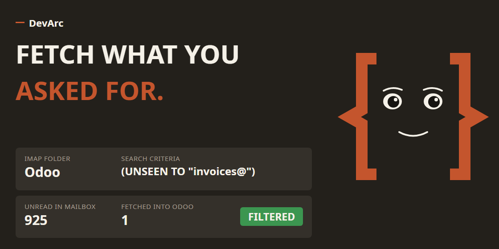
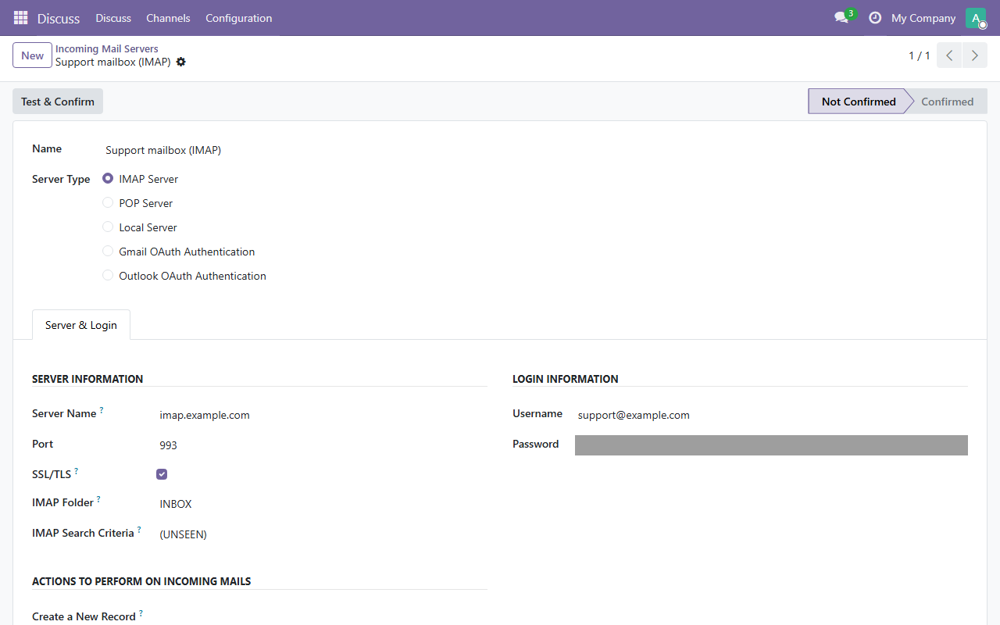
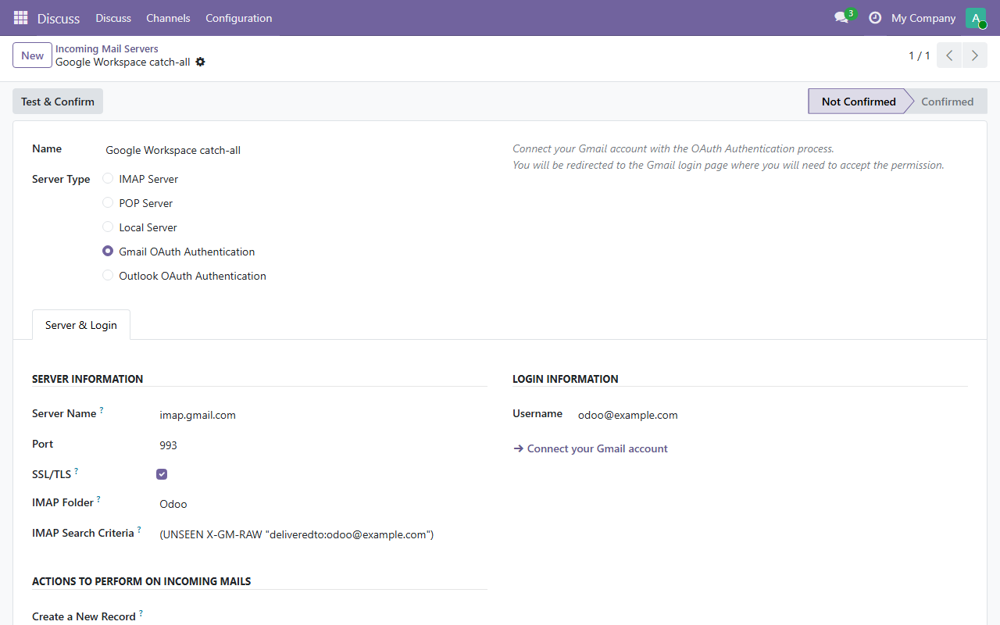
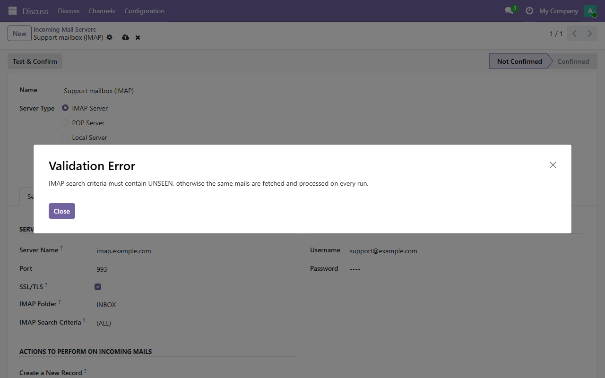
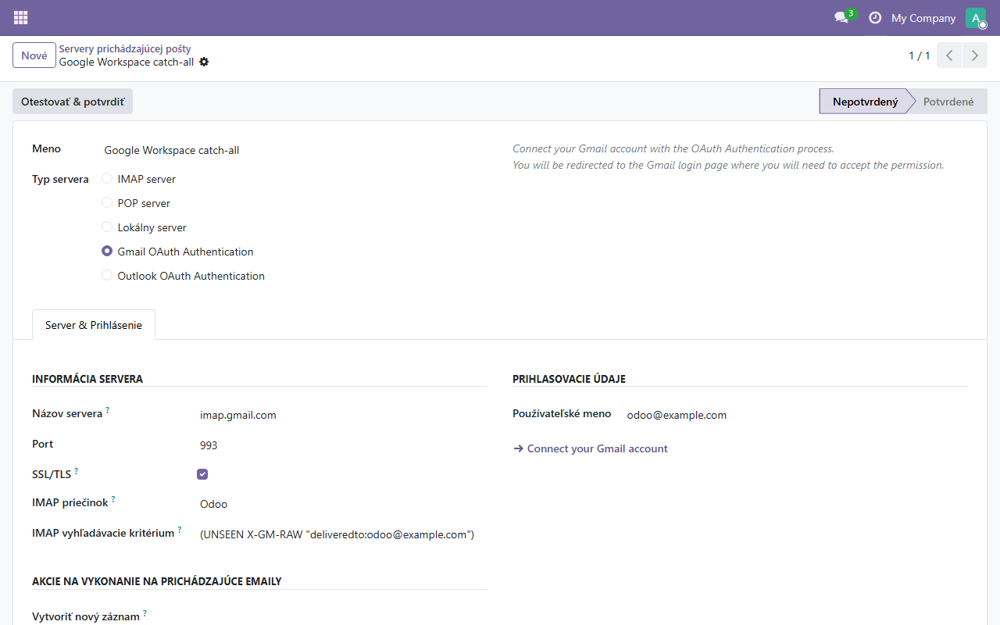

Fetch only the IMAP mails matching a folder and a search criteria, instead of every unread mail in the mailbox.

Set an IMAP folder and a search criteria per incoming mail server, instead of Odoo core's fixed INBOX + (UNSEEN).
A constraint rejects any criteria that does not start with UNSEEN, so the same mails can never be silently refetched and reprocessed on every cron run.
Depends on mail only. Gmail servers go through the same connection wrapper automatically once google_gmail is installed too.
google_gmail reports the same type for it), the addon replaces check_unread_messages() with a wrapper that runs select(imap_folder) followed by search(None, imap_search_criteria).INBOX, (UNSEEN)) reproduce Odoo's own built-in fetch behaviour - nothing changes until you narrow the folder or the criteria.
Route mail sent to an address your Workspace does not recognize into Odoo through a plus-addressed alias, matched by a Delivered-To header search or the Gmail-specific X-GM-RAW IMAP extension - full recipe, including a read-only way to verify a criteria before activating it, in the module's docs/gmail-catchall.md.

Saving a search criteria that does not start with the UNSEEN token is rejected outright - a criteria starting with NOT or OR can match already read mails that then get refetched and reprocessed on every scheduled run. A folder or criteria value containing a line break is rejected too, closing an IMAP command injection path.

Source strings are English, with full translations for German (de.po) and Slovak (sk.po) - field labels, help texts and the validation error all switch with the user's language.

Depends on Odoo's own mail module only, no other Python or Odoo dependency. Install google_gmail as well if you want Gmail servers to pick up the same folder and criteria fields automatically.
Support: info@devarc.ch · Source & docs · License: LGPL-3